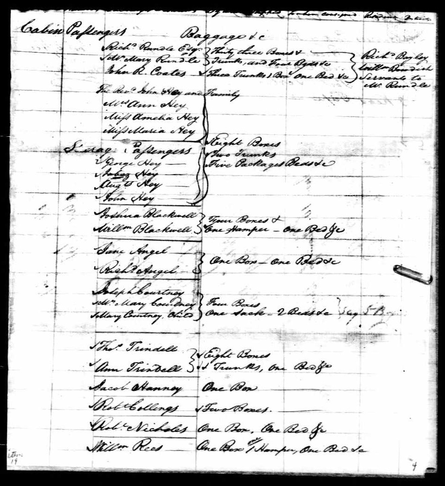

The Ship Captain's Records of Joshua Blackwell; Joshua's Nephew,
William Perrin Blackwell, age 10; the Rev. John Hey and Family -- and
their Baggage on the Brig Cornelia's 1804 Voyage from Bristol,
England to Philadelphia.
We are very lucky these records survived. There were no immigration
laws in 1804, the country truly had "open borders." A ship tied up to
a wharf, its passengers disembarked and that was it. Captains were not
required to report who landed or even to make lists of passengers. But
why did Joshua bring his young nephew? To help with tasks like
polishing his shoes? To start the boy's education on how to conduct
business? Or perhaps as a favor to an impatient child, anxious to see
the country they were moving to and not wanting to wait till the next
year when the rest of his family was coming. I find it interesting to
look at what baggage the passengers brought with them. Note also that
in the handwriting of that time, A "double s" (as in 'passenger') is
written 'fs".
The Hey family could afford a cabin, but the Blackwells traveled
"steerage." That was the large, "open" area between decks. "Passengers
slept, ate, and socialized in the same spaces. They brought their own
bedding. Although food was provided, passengers had to cook it
themselves. On rough crossings, steerage passengers often had little
time in the fresh air on the upper deck. If passengers didn’t fill
steerage, the space often held cargo." From a NY Times article in 1851
"Each passenger receives weekly 5 lbs. of oatmeal, 2 1/2 lbs. biscuit,
1 lb. flour, 2 lbs. rice, 1/2 lb. sugar, 1/2 lb. molasses, and 2
ounces of tea. [No meat, cheese, vegetables or fruit.] He is obliged
to cook it the best way he can in a cook shop 12 feet by 6! This is
the cause of so many quarrels and...many a poor woman with her
children can get but one meal done, and sometimes they get nothing
warm for days and nights when a gale of wind is blowing and the sea is
mountains high and breaking over the ship in all directions." {Of
course, when the seas were that rough, most of the passengers were
seasick and didn't want to eat.]
[The Cornelia, built in 1799, sank 8/8/1804 in mid-Alantic
while returning to Bristol.]

The captain's list
of passengers and their baggage on the brig Cornelia on her
1804 voyage from Bristol, England to Philadelphia